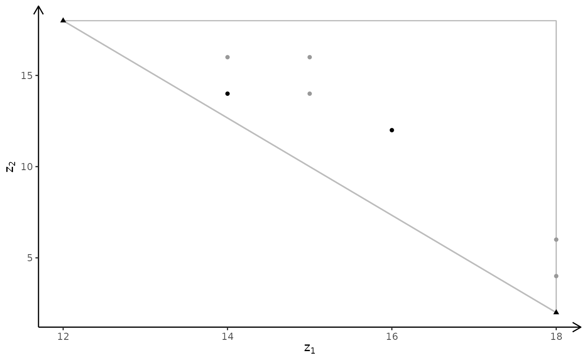
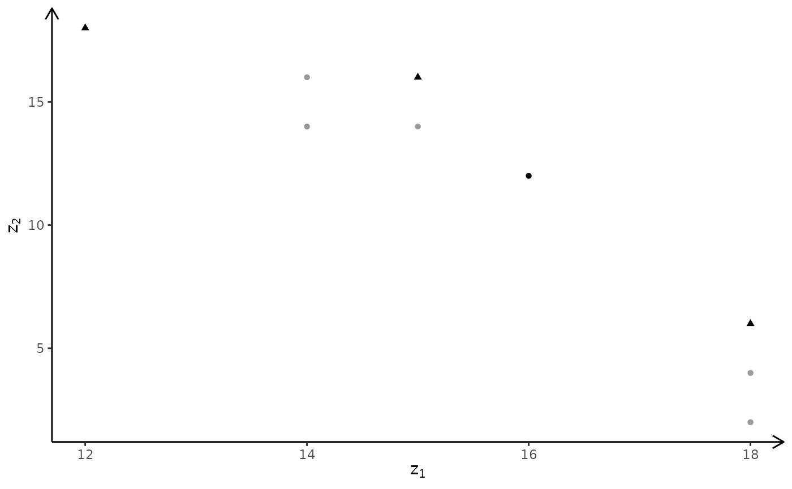
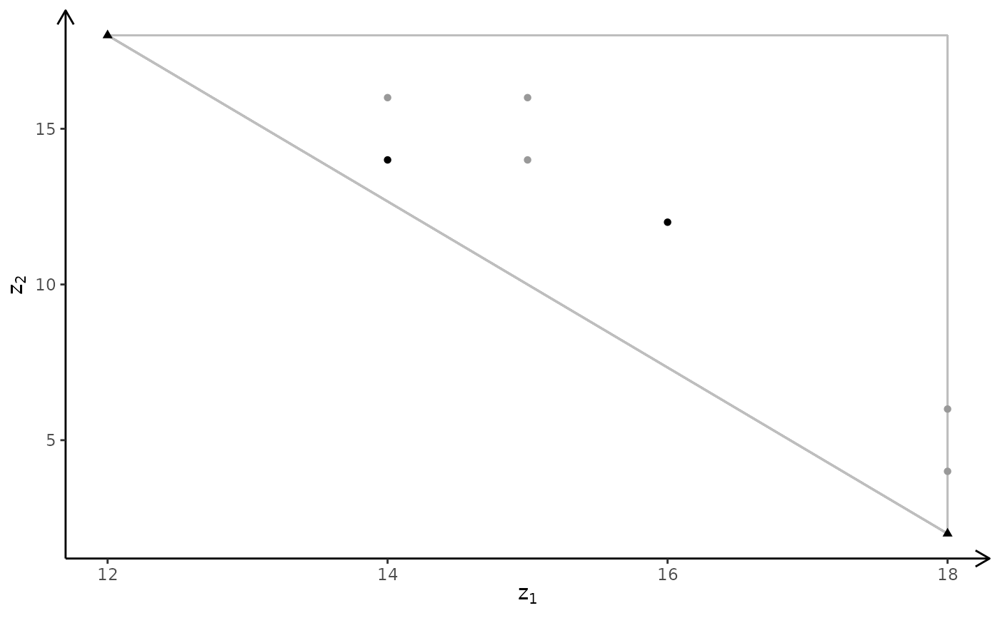
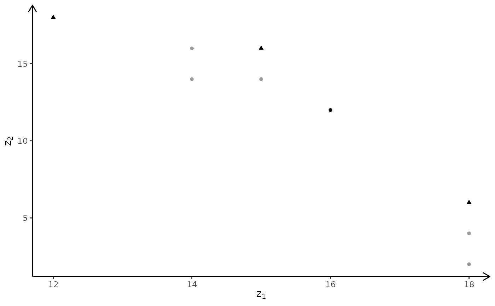

Create a plot of a discrete non-dominated set.
Usage
plotNDSet2D(
points,
crit,
addTriangles = FALSE,
addHull = TRUE,
latex = FALSE,
labels = NULL
)Arguments
- points
Data frame with non-dominated points.
- crit
Either max or min (only used if add the iso-profit line). A vector is currently not supported.
- addTriangles
Add search triangles defined by the non-dominated extreme points.
- addHull
Add the convex hull and the rays.
- latex
If true make latex math labels for TikZ.
- labels
If
NULLdon't add any labels. If 'n' no labels but show the points. If equalcoordadd coordinates to the points. Otherwise number all points from one.
Note
Currently only points are checked for dominance. That is, for MILP models some nondominated points may in fact be dominated by a segment.
Author
Lars Relund lars@relund.dk
Examples
dat <- data.frame(z1=c(12,14,16,18,18,18,14,15,15), z2=c(18,16,12,4,2,6,14,14,16))
points <- addNDSet(dat, crit = "min", keepDom = TRUE)
plotNDSet2D(points, crit = "min", addTriangles = TRUE)
 plotNDSet2D(points, crit = "min", addTriangles = FALSE)
plotNDSet2D(points, crit = "min", addTriangles = TRUE, addHull = FALSE)

points <- addNDSet(dat, crit = "max", keepDom = TRUE)
plotNDSet2D(points, crit = "max", addTriangles = TRUE)
plotNDSet2D(points, crit = "max", addHull = FALSE)

plotNDSet2D(points, crit = "min", addTriangles = FALSE)
plotNDSet2D(points, crit = "min", addTriangles = TRUE, addHull = FALSE)

points <- addNDSet(dat, crit = "max", keepDom = TRUE)
plotNDSet2D(points, crit = "max", addTriangles = TRUE)
plotNDSet2D(points, crit = "max", addHull = FALSE)
